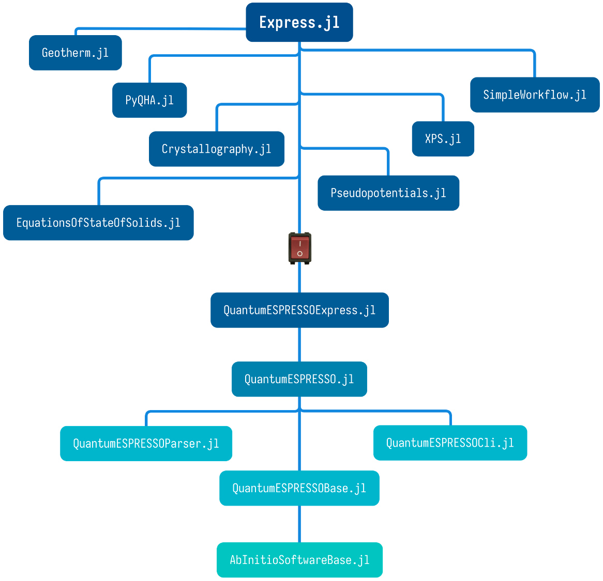

Express: an extensible, lightweight, high-throughput, high-level workflow framework that aims to automate ab initio calculations
Documentation for Express.
Package Features
Express is an extensible, high-throughput, high-level workflow framework that aims to automate ab initio calculations for the materials science community. Express is shipped with well-tested workflow templates, including structure optimization, equation of state (EOS) fitting, phonon spectrum (lattice dynamics) calculation, and thermodynamic property calculation in the framework of the quasi-harmonic approximation (QHA). It is designed to be highly modularized so that its components can be reused across various occasions, and customized workflows can be built on top of that.
The differences between express and Express: express is the project's name, it is a collection of Julia packages. Its core is Express.jl, managing and dispatching the rest packages. Express is short for Express.jl, which is the most important component of express. The direct components of express are:

Express.jlprovides a high-level interface to all the workflows, including file reading and writing, job creation, submission, monitoring, result retrieving, and data analysis. To work with specific software, install the corresponding plugin, e.g.,QuantumESPRESSOExpress.jlfor Quantum ESPRESSO.ExpressCommands.jlis a user-friendly command-line interface ofExpress.jlfor non-developers. It installs an executable 'xps' that can execute code from configuration files provided by users.EquationsOfStateOfSolids.jlfits energy (or pressure) vs. volume results to equations of state, etc. These features are repetitively used in the equation of state workflow.Crystallography.jlcalculates a crystal's primitive cell (or supercell) volume from lattice parameters, finds symmetry operations and generates high symmetry points in the Brillouin zone, etc.PyQHA.jlis a Julia wrapper of the Pythonqhapackage, which can calculate several thermodynamic properties of both single- and multi-configuration crystalline materials in the framework of quasi-harmonic approximation (QHA). Theqhacode is the foundation of the QHA workflow.Geotherm.jlis a Julia interpretation of the Fortran code we used in this paper, which calculates the isentropic temperature/pressure gradient (geotherm) using thermodynamic properties obtained with the QHA workflow.Pseudopotentials.jlpresents a database for storing and querying pseudopotentials used in ab initio calculations.SimpleWorkflows.jlis the skeleton of the workflow system, which defines building blocks, composition rules, and operation order of workflows.
The QuantumESPRESSOExpress.jl is a special type of package called "plugin of express" for handling ab initio software such as Quantum ESPRESSO. Other plugins for other software are possible. The dependencies of QuantumESPRESSOExpress.jl are listed below.
AbInitioSoftwareBase.jlprovides a standard API for some popular ab initio software such as Quantum ESPRESSO.QuantumESPRESSOBase.jldeclares basic data types and methods for manipulating crystal structures, generating input files for Quantum ESPRESSO, error checking before running, etc.QuantumESPRESSOParser.jlparses the input or output files of Quantum ESPRESSO to extract and analyze data.QuantumESPRESSOFormatter.jlformats the input files of Quantum ESPRESSO.QuantumESPRESSOCommands.jlis a command-line interface that exports the commands Quantum ESPRESSO uses in a configurable way.QuantumESPRESSO.jlis simply a wrapper of the types, methods, and commands defined inQuantumESPRESSOBase.jl,QuantumESPRESSOParser.jl,QuantumESPRESSOFormatter.jl, andQuantumESPRESSOCommands.jlunder a common namespace.
Manual Outline
- Installation guide
- How to develop this package
- Configuration files
- How to run
Expressfrom command line - Tracking and monitoring jobs in a workflow
- Troubleshooting
- Some other questions about
Express